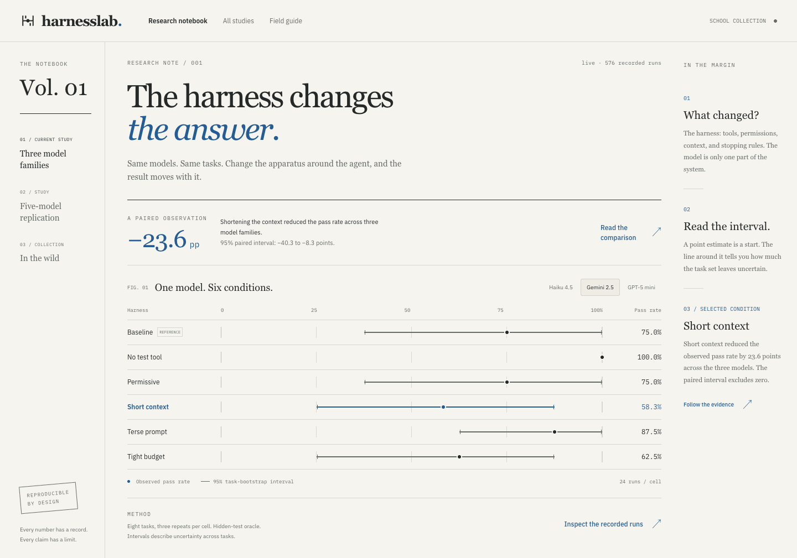
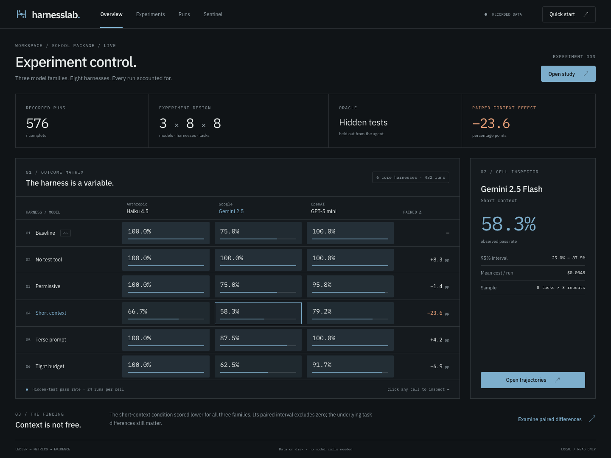
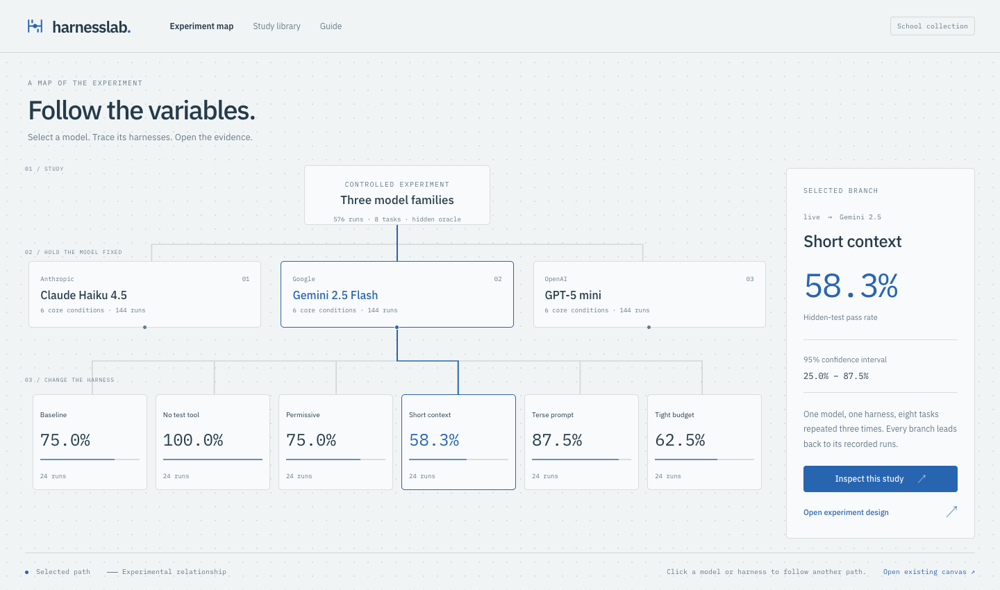
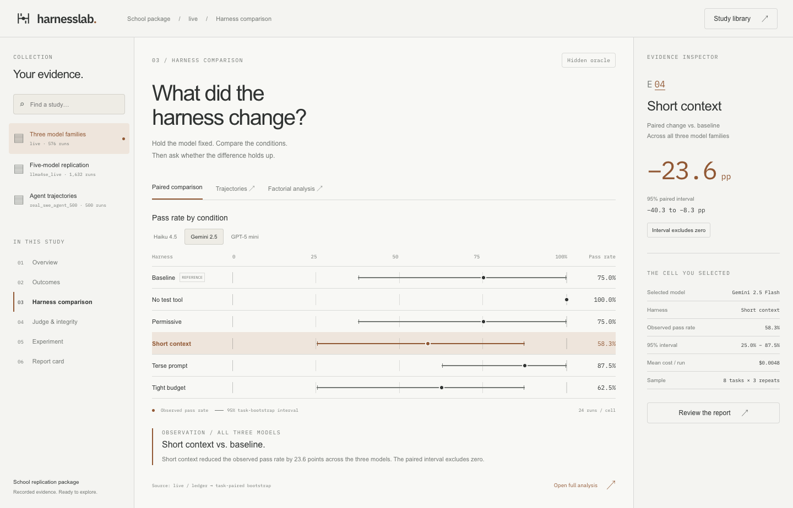
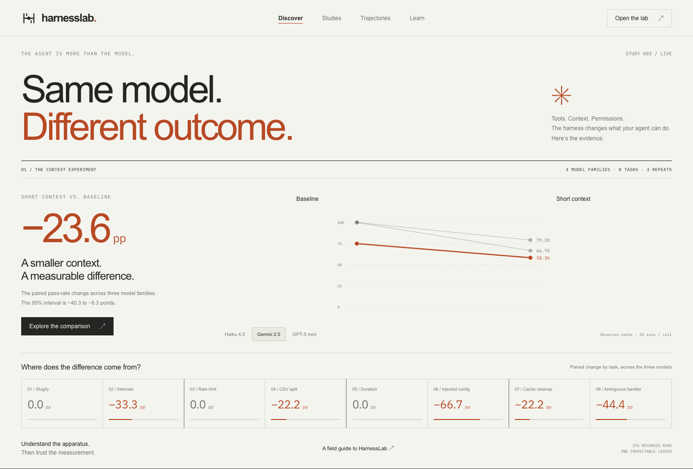

harnesslab / design studiesFIVE DIRECTIONS · ONE REAL EXPERIMENT
A different way
to see the experiment.
Five fully rendered directions for HarnessLab. Each has a different personality and a different way into the work. Open one, switch models, and explore the evidence.

01
Lab Notebook
Thoughtful. Scholarly. Distinctly human.
A finding opens the page; evidence follows.

02
Instrument Console
Precise. Technical. Built for concentration.
The whole experiment on one control surface.

03
Experiment Atlas
Spatial. Exploratory. Made to follow your curiosity.
The experiment becomes a map you can read.

04
Evidence Desk
Calm. Familiar. Exceptionally easy to navigate.
Studies, analysis, and interpretation stay together.

05
Signal Studio
Confident. Memorable. Immediately understandable.
The result has presence; its evidence is right there.